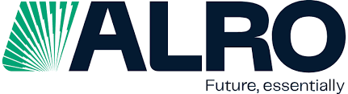
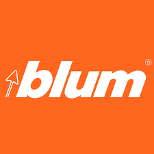
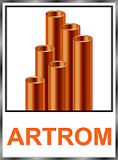
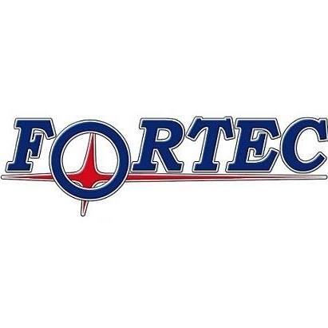

ALRO SA
Slatina, Olt
Materiale de construcții

Blum România
București
Sprijin financiar

ARTROM STEEL TUBES SA
Slatina, Olt
Sprijin financiar
NK SMART CABLES SRL
București
Sprijin financiar
IRIS FARMACIE SRL
Câmpia Turzii, Cluj
Sprijin financiar

FORTEC SRL
Zalău, Sălaj
Sprijin financiar
SC Esri Romania SRL
București
Sprijin financiar